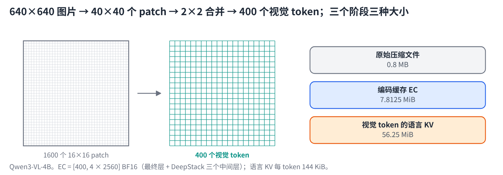
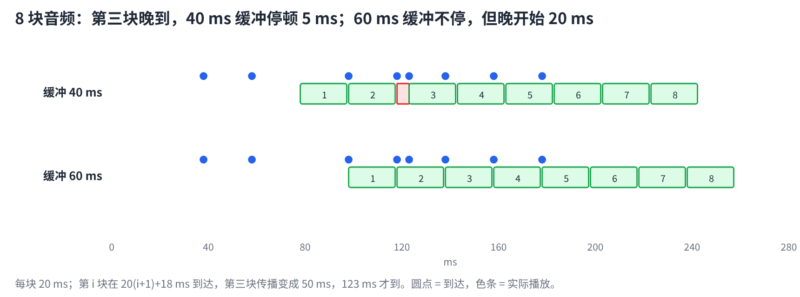
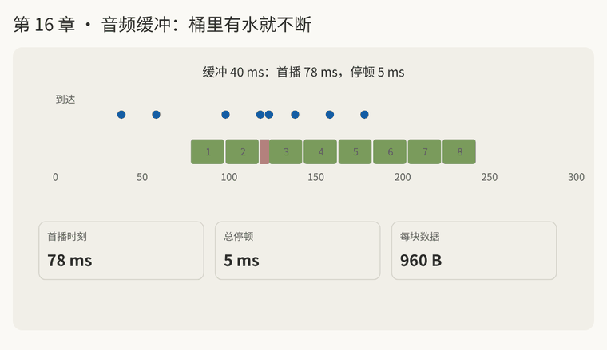

第 16 章 · 多模态与实时交互：数据换形状，时间有死线（略讲）
本地运行
git clone https://github.com/wikieden/ai-infra-from-constraints
cd ai-infra-from-constraints/code/notebooks
pip install jupyterlab torch numpy
jupyter lab ch16_multimodal_realtime.ipynb也可以下载后直接用 VS Code 打开 .ipynb 运行。需要 GPU 的章节在 Colab 里选「代码执行程序 → 更改运行时类型 → GPU」。
本章回答：一张图片进语言模型要变成多少个 token，在不同阶段各占多少字节？语音和图像生成的"一步"是什么？实时语音为什么要缓冲，缓冲多大合适，被打断时要停哪几样东西？
讲解日期：2026-11-24 · 上一章：第 15 章 多轮交互与 Agent 任务 · 下一章：第 17 章 训练与强化学习的计算和状态
对应原文：materials/ai-infra-book/manuscripts/03-推理与训练负载.md§3.3 L280–L379（图 3-16 到 3-20）。按 study-plan 分级为略读：本章只讲数据形状和时间约束的主线，各模型的细节留给原文。
本章缩写：BF16 = Brain Float 16（Google Brain 提出的 / 浮点 / 16 位）· CFG = Classifier-Free Guidance（无 / 分类器 / 引导）· DiT = Diffusion Transformer（扩散 / Transformer）· EC = Encoder Cache（编码器 / 缓存）· KV = Key-Value（键 / 值）· VAE = Variational AutoEncoder（变分 / 自编码器）。全部缩写见 缩写与术语表
讲解
第一步：一张图片进语言模型：数 token、数宽度，三种表示三种大小（2026-11-24）
类比：把一张大地图切成小方块再贴成目录卡。 先把地图切成格子（patch），相邻 2×2 格再合成一张卡（合并），每张卡写满一页描述（特征宽度）。卡片数量决定语言模型要读多少个位置，每张卡写多宽决定这一步的数据量。
公式（原文 L291）：
- \(p_{\mathrm{patch}}\)：方块边长；\(r\)：每边合并几块。
例子（原文 L294–L306）：Qwen3-VL-4B，\(640 \times 640\) 图片，16×16 patch → 1600 个 patch，2×2 合并 → 400 个视觉 token。
| 对象 | 大小 | 能不能复用 |
|---|---|---|
| 压缩截图（原始文件） | 0.8 MB | 同一文件内容 |
| 编码缓存 EC：\([400, 10240]\) BF16（最终层 + DeepStack 三个中间层，各 2560 维） | 8,192,000 B = 7.8125 MiB | 图片、预处理、编码器、输出格式都一样才能复用 |
| 视觉 token 的语言 KV：\(400 \times 144\) KiB | 56.25 MiB | 还依赖图片之前的上下文、顺序和位置 |
视觉编码本身约 1.310 TFLOPs。

图 16-1 · 视觉 token 数（语言模型要读的位置数）和每个 token 的特征宽度要分开算：DeepStack 拼接让宽度 ×4，但语言序列只多 400 个位置。
- 四张同样的图 + 400 个文本 token：EC 31.25 MiB，视觉 KV 225 MiB，输入逻辑 KV 共 281.25 MiB（原文 L316）。
- 图片长宽都加倍：视觉 token ×4，EC 和语言 KV 都 ×4。
- 交接位置（原文 L318）：发原图，对方要重新编码；发 EC，对方从语言 prefill 开始；发 KV，交接的是已经算好的语言上下文（原书第 8、9、12 章）。
- 问题放在图片之后，换问题不影响视觉 token 的 KV（因果注意力，第 07 章）。
一句话：一张图在原文件、编码缓存、语言 KV 三个阶段的大小差两个数量级；token 数和特征宽度要分开算。
第二步：生成语音和图像，"一步"不再是一个 token（2026-11-24）
类比：画一幅画，不是从左到右一笔一笔画完，而是先铺一层模糊的底色，再一遍遍修细节。 每一遍都要过整张画布。
原文 L326–L330：
| 输出 | 一步是什么 | 例子 |
|---|---|---|
| 语音（Fish Audio S2 Pro） | 慢路径每次推进一个音频帧，快路径在帧内补齐多个码本 | 一帧 = 1 次快路径建状态 + 9 次预测 = 10 次快路径前向 |
| 图像（Qwen-Image-2512） | 每个去噪步把整组 latent 更新一遍 | 1024×1024 → 4096 个 latent 位置；50 步 × 2 路 CFG = 100 次 DiT 前向，约 \(7.83 \times 10^{15}\) FLOPs |
公式（原文 L330）：
- \(n_s\)：去噪步数；\(n_b\)：每步引导分支数（CFG 是 2）；\(F_{\mathrm{step}}\)：一次 DiT 前向。
- 步数加倍，运算加倍；分辨率提高，单步里的位置数和位置间交互都变多。
- 和文本不同：文本每步追加上下文；图像去噪反复更新同一组 latent。
一句话：语言 token/s、声学帧/s、每秒生成的音频时长是不同的速度；图像生成的工作量 = 步数 × 分支数 × 单步。
第三步：实时语音：缓冲余量与首播时间的取舍（2026-11-24）
类比：用水桶接水龙头的水，桶底开个口持续放水。 桶里的水（缓冲）就是余量；水龙头偶尔断流一下，桶里有水就不会断；桶开始时装得越满越保险，但开始放水就越晚。
公式（原文 L337）：截至 \(t\) 已到达的音频时长 \(A(t)\)，已播放的 \(P(t)\)：
余量降到 0 而下一块还没到，声音就断。
例子（原文 L348–L356）：每 20 ms 一块，24 kHz、单声道、16 位：每块 \(24000 \times 0.020 \times 2 = 960\) 字节。每块采集完后处理 12 ms、发送 1 ms、传播通常 5 ms：第 \(i\) 块（从 0 数）在 \(20(i+1) + 18\) ms 到达。第三块（\(i = 2\)）传播延迟变成 50 ms，123 ms 才到。
| 初始缓冲 | 首播时刻 | 第三块计划播放 | 结果 |
|---|---|---|---|
| 40 ms | 38 + 40 = 78 ms | 78 + 40 = 118 ms | 123 ms 才到，停顿 5 ms，后面依次顺延 |
| 60 ms | 98 ms | 138 ms | 不停顿，但晚开始 20 ms |

图 16-2 · 圆点是到达，竖线是原定播放时刻，色条是实际播放。缓冲吸收偶尔的抖动；如果平均到达速度长期低于播放速度，再大的有限缓冲也会耗尽。
实测（原文 L346）：两次语音交互，用户停止说话到首块音频到达约 400 ms、370 ms，后续块的到达间隔中位数约 94 ms。
一句话：实时播放要求每块按时到；缓冲越大越不容易断，但开始得越晚，而且只能吸收波动，补不了长期速度不足。
第四步：打断：停播放、停计算、放存储是三个时刻（2026-11-24）
类比：叫停一场演出。 舞台上闭麦（停止播放）、后台停止排练下一首（停止计算）、撤掉道具腾出场地（释放存储），是三件事，各有各的时间。
原文 L366–L372：教学时序里 123 ms 发出打断，控制延迟 5 ms，设备每 10 ms 检查一次控制指令，130 ms 静音，用户感到的打断延迟 7 ms。后端停止生成决定后续计算何时结束；缓冲和状态释放决定容量何时能给其他任务用。
不是所有任务都要连续输出（原文 L374）：RAW 图片精修只关心什么时候得到完整成片，还必须保留原图信息（EC 替代不了原图）。有的要尽快开始，有的要持续流畅，有的要尽早全部完成。
场景代码：浏览器或客户端的抖动缓冲，核心就是"先攒够再播、按播放时钟取"（示意）：
import collections, time
buffer, BUF_MS, CHUNK_MS = collections.deque(), 40, 20
def on_audio_chunk(chunk): # 网络到达回调
buffer.append(chunk)
def player_loop(play):
while len(buffer) * CHUNK_MS < BUF_MS: # 先攒够初始缓冲：越大越晚开始
time.sleep(0.001)
next_t = time.perf_counter()
while True:
if buffer: play(buffer.popleft()) # 按播放时钟取下一块
else: play(b"\x00" * 960) # 没到：只能出静音（停顿）
next_t += CHUNK_MS / 1000; time.sleep(max(0, next_t - time.perf_counter()))
一句话：打断要分别看停播放、停计算、放存储三个时刻；任务不同，时间要求也不同。
动画演示：音频缓冲：桶里有水就不断

可交互版：animations/16-multimodal-realtime.html（滑块：初始缓冲 20–100 ms；第三块的额外延迟 0–80 ms）。
怎么看：
- 上排圆点是每块音频的到达时刻，下排色条是实际播放（第三步）；
- 缓冲曲线 \(B(t) = A(t) - P(t)\)：每到一块跳上去 20 ms，播放时匀速下降；
- 播放时先演 40 ms 缓冲（第三块停顿 5 ms），再演 60 ms 缓冲（不停顿、晚开始）；
- 右边显示首播时刻和总停顿时长。
练习与作答记录
题 1（第一步）：Qwen3-VL-4B 的设置不变，图片改成 \(960 \times 960\)。视觉 token 有多少？完整 EC 多大？这些视觉 token 的语言 KV 多大（每 token 144 KiB）？
作答记录：（待作答）
题 2（第二步）：一个图像生成模型每次 DiT 前向 \(3 \times 10^{13}\) FLOPs，30 步、CFG 两路。总运算量多少？把步数降到 8 步、去掉 CFG，降到原来的几分之几？
作答记录：（待作答）
题 3（第三步）：其他条件同正文，初始缓冲 45 ms，第三块额外晚到（传播延迟 72 ms）。首播在几 ms？第三块会不会造成停顿，停多久？
作答记录：（待作答）
原书练习 3-5（L376–L378：\(1280 \times 1280\) 图片；40 / 60 ms 缓冲；每秒只到 0.9 秒音频时缓冲多久耗尽）。想多练可以做。
口诀
地图切格再合卡，张数是位置，页宽是数据；
原图、EC、KV，三站三种大小；
画画一遍遍修，步数乘分支乘单步；
桶里有水不断流，桶越满开始越晚；
闭麦、停排练、撤道具，三件事三个钟。
本章复习卡片
I57（视觉 token 数与三种表示的大小）、I58（语音、图像生成的"一步"与 \(n_s n_b F_{\mathrm{step}}\)）、I59（音频缓冲 \(A(t) - P(t)\) 与首播取舍、打断的三个时刻）。练习做完后，按答错、卡住的地方再补。
附录 · 延伸阅读
留给以后深入学习用，不影响本章主线。★ 是建议先读的。
推荐阅读
| 读什么 | 读哪里 | 读它为了什么 |
|---|---|---|
| ★ AII 第 3 章 | §3.3 L280–L379 | 本章原文，图 3-16 到 3-20 |
| Qwen3-VL 技术报告 | 视觉编码器与 DeepStack | 400 个视觉 token、四组特征拼接的来历 |
AOI 论文（原文 [^aoi]） |
全文 | 持续观测与筛选关键帧 |
| 本仓库 diffusion-models 讲义 | 第 1–2 章 | 去噪和 VAE 的基础 |
| AII 第 12 章 §12.1 | 实时语音、图片精修 | 端、边、云上的同一条数据流（第 65 章） |
数学原理
- 网格计数：\(H \times W\) 的图按边长 \(p\) 切块，有 \((H/p)(W/p)\) 块；每边再合并 \(r\) 块，再除以 \(r^2\)。
- 缓冲余量：到达累计曲线和播放累计曲线之间的竖直距离；播放曲线斜率恒为 1。
- 长期速度：若平均到达速度 \(a < 1\)（每秒只到 \(a\) 秒音频），初始余量 \(B_0\) 在 \(B_0 / (1 - a)\) 秒后耗尽。
公式清单
| 公式 | 意思 |
|---|---|
| \(n_v = H W / (p^2 r^2)\) | 视觉 token 数 |
| EC 字节 \(= n_v \times\) 特征宽度 \(\times b\) | 编码缓存 |
| \(F_{\mathrm{image}} = n_s\,n_b\,F_{\mathrm{step}}\) | 图像生成运算 |
| \(B_{\mathrm{audio}}(t) = A(t) - P(t)\) | 音频缓冲余量 |
| 每块字节 \(=\) 采样率 × 时长 × 声道 × 每样本字节 | 960 B / 20 ms |
代码对照：把本章的数字用代码算一遍
纯 Python，不需要 GPU。代码在仓库本地
ai-infra/solutions/chapter-code/ch16_multimodal_realtime.py，配套测试tests/test_ch16.py：
bash cd ai-infra/solutions/chapter-code uv run python ch16_multimodal_realtime.py # 一步一步打印 uv run pytest tests/test_ch16.py
讲义 ↔ 代码：
| 讲义 | 公式 | 写法 | 跑出来 |
|---|---|---|---|
| 第一步 视觉 token | \(HW/(p^2r^2)\) | vision_tokens(640, 640) |
400 |
| 第一步 三种大小 | 乘宽度与字节 | vision_sizes(400) |
EC 7.8125 MiB，KV 56.25 MiB；四图 + 文本 281.25 MiB |
| 第二步 图像生成 | 步数 × 分支 | dit_forwards(50, 2) |
100 次 |
| 第三步 每块字节 | \(24000 \times 0.02 \times 2\) | chunk_bytes() |
960 |
| 第三步 播放时间线 | 逐块模拟 | playback(40, {2: 50})、playback(60, {2: 50}) |
首播 78 ms、停顿 5 ms；首播 98 ms、停顿 0 |
关键几行：
def playback(buf_ms, prop_ms_override, n=8, chunk=20, proc=13, prop=5):
arrive = [chunk * (i + 1) + proc + prop_ms_override.get(i, prop) for i in range(n)]
t = arrive[0] + buf_ms; start, stall = t, 0 # 第一块到达后再等 buf_ms 开播
for i in range(1, n):
t += chunk # 上一块播完，下一块的计划时刻
if arrive[i] > t: stall += arrive[i] - t; t = arrive[i] # 没到：停顿、顺延
return start, stall
代码里才看得到的 3 件事：
proc=13是"处理 12 ms + 发送 1 ms"；第 \(i\) 块在 \(20(i+1)\) ms 采集完，所以第一块到达是 \(20 + 13 + 5 = 38\) ms。- 停顿发生后，后面所有块的播放都顺延（
t = arrive[i]），这就是原文"后续块虽已到达，也要按声音顺序等待"。 - EC 的 7.8125 MiB 是四组 2560 维特征拼起来的 \([400, 10240]\)；只看最终层是 1.953 MiB。
自己改一改（不影响练习答案）：
- 把
playback的第三块延迟改成 30、90 ms，看 40 ms 缓冲还停不停。 - 把
vision_tokens的合并 \(r\) 从 2 改成 1，看视觉 token 和 KV 涨多少。 - 让每块都随机多 0–20 ms 延迟，多跑几次，找出不停顿所需的最小缓冲。